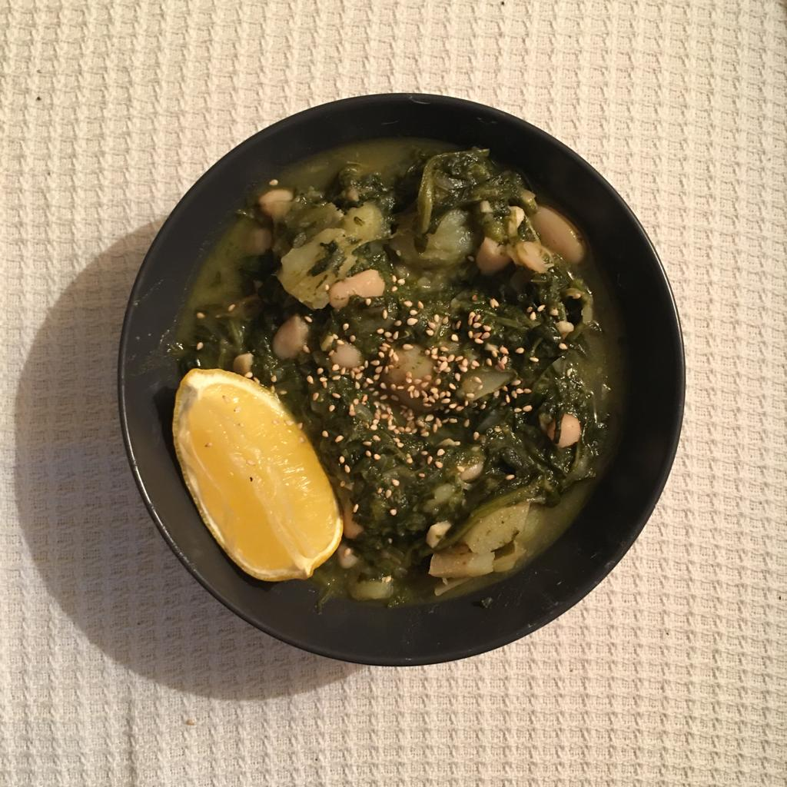

The first time we made this, Tom mixed up the amounts of garlic and chili to devastating effect ... but we kept on going back for more. It's originally an Ottolenghi recipe from the book Flavour named "Bkeila, potato and butter bean stew".

Finely chop the onions, and fry in a fair bit of olive oil in a large saucepan on a medium heat until soft.
Finely chop the garlic and chili, and add these to the pan with the 3 dried spices and cook for another 5 minutes
Roughly chop the fresh herbs
If the spinach is fresh chop it finely, and add this along with the fresh herbs, and cook on high for about 10 minutes with some more olive oil.
If it's frozen, add the spinach first, still on a medium heat. Then when it's almost defrosted, add the herbs and cook on high for another few minutes with some more olive oil until everything looks well done.
Stir in the stock, lemon juice, sugar, and 2tsp salt.
Give it a stir, bring to a simmer, and while it's heating, chop the potatoes into bitesize chunks. When it's simmering, add to the pan and cook for 25 minutes or until the potatoes are just about cooked
Add the beans and leave for another 5 mins, season if needed and scran.